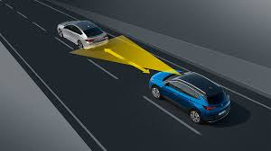

Level 1 of autonomous driving is considered to be the lowest level of automation. In this level, the driver handles most of the functions in the car but with the help of minimal automation.
Some of the features included in level 1 autonomous vehicles are listed below:Adaptive cruise controls helps in increasing or decreasing a vehicle's speed to maintain a safe distance from neighboring vehicles. The distance between vehicles are measured with a radar unit generally situated behind the front grille or under the bumper. The ACC works efficiently, but is hampered by fog and other environmental factors.

For more information on adaptive cruise control follow the video below
Most of the basic audible parking assistance systems use ultrasonic technology to determine the proximity of the vehicle to its surroundings (vehicles and objects). However, advanced parking assistance systems use sophisticated camera and video assistance that overcome the drawback of blind-spots compared to trivial systems.